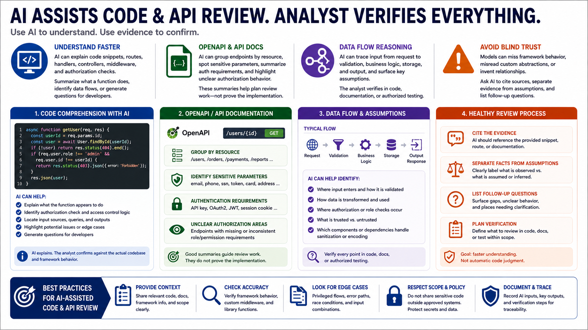

AI for Code and API Understanding
Connecting to LMS... Progress: in progress

Narration
AI can be useful for understanding code snippets, routes, handlers, controllers, middleware, and authorization checks when the assessment includes code or API documentation review. The assistant can summarize what a function appears to do, identify relevant data flows, or generate questions for developers. This can accelerate comprehension, especially in unfamiliar frameworks or large codebases.
OpenAPI specifications and API documentation are good candidates for structured AI assistance. The assistant can group endpoints by resource, identify parameters that appear sensitive, summarize authentication requirements, and list places where authorization behavior is unclear. Those summaries help the assessor plan review work, but they do not prove the implementation behaves as documented.
Data flow reasoning should remain evidence-driven. AI can help trace how input appears to move from a request to validation, business logic, storage, and output. It can also help identify assumptions, such as whether a value is trusted, whether a role check is applied consistently, or whether a dependency handles sanitization. The analyst should verify these points in code, documentation, or authorized testing.
Avoid blind trust in AI-generated interpretations. Models can miss important framework behavior, misunderstand custom abstractions, or invent relationships that are not in the code. A healthy review process asks the assistant to cite the provided snippet, separate evidence from assumptions, and list follow-up questions. The goal is faster understanding, not automatic code judgment.